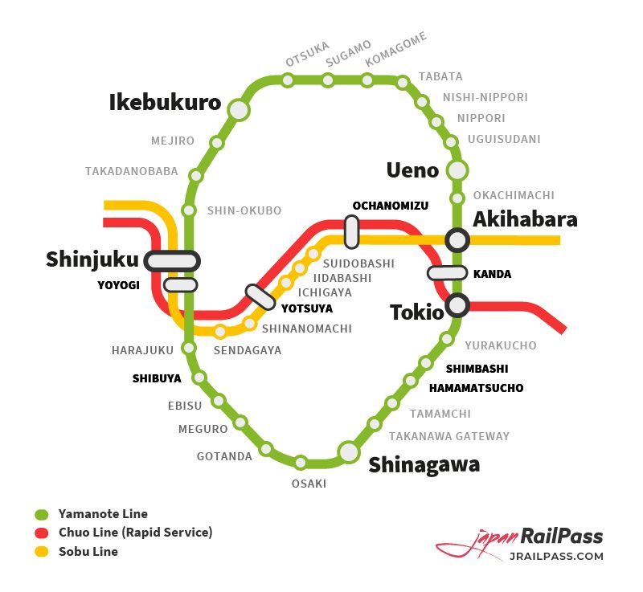

Trains, Planes, and IC Cards
Should you buy the expensive rail pass? It depends on your itinerary.
| Feature | JR Rail Pass | Suica / Pasmo (IC Card) |
|---|---|---|
| Best For | Long distance travel (Tokyo -> Kyoto -> Hiroshima) | Local subways, buses, and convenience stores |
| Cost | High Flat Rate (~$350+) | Pay-as-you-go ($3 deposit) |
| Speed | Unlimited rides on JR lines | Works on ALL lines (Private & JR) |
This is the most important train line in Tokyo. It goes in a circle connecting all major districts.
Tip: "Soto-mawari" (Clockwise) and "Uchi-mawari" (Counter-clockwise) are the directions.
Most Japanese gates use IC cards. You do not need to insert a ticket unless you bought a paper one.